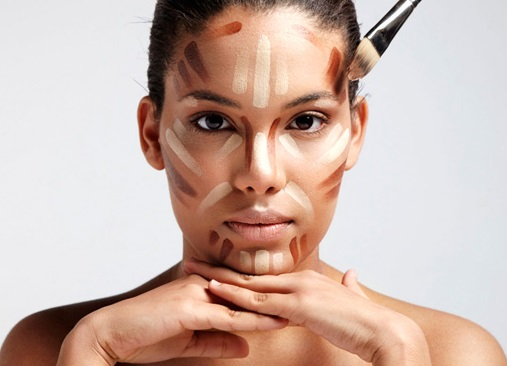

Контуринг
Ты можешь сделать черты своего лица такими, какими ты их хочешь видеть, и для этого не нужно принимать радикальные меры — ложиться под нож пластического хирурга и делать рискованные операции.
Все в тысячу раз проще:тебе нужны кисти, тональные средства нескольких оттенков и минимальные навыки контуринга.
О контуринге во всем мире заговорили после того, как этим секретом идеального овала лица начали делиться знаменитости, выкладывая в Сеть фотографии себя, «расчерченных» с помощью тональных средств светлыми и темными линиями. Вся эта графика — это «черновик» будущего лица. Темные и светлые оттенки позволяют создать игру света и тени, благодаря которой отдельные участки лица удается выделить, а другие — скрыть, сузить, визуально уменьшить и сделать менее заметными.
Выбирая средства для контуринга, избегай красноватых и оранжевых оттенков. Вместо того чтобы сделать твои черты лица более выразительными, они сыграют плохую шутку с твоим тоном кожи.
Представляем вам видеоурок по скульптурированию лица с красоткой Марией Мельниковой . В ролике вы сможете увидеть коррекцию лица с помощью наших стиков Stick Foundation (это просто потрясающий продукт!), а также завершенный макияж с коллекцией What a spice!
О контуринге во всем мире заговорили после того, как этим секретом идеального овала лица начали делиться знаменитости, выкладывая в Сеть фотографии себя, «расчерченных» с помощью тональных средств светлыми и темными линиями. Вся эта графика — это «черновик» будущего лица. Темные и светлые оттенки позволяют создать игру света и тени, благодаря которой отдельные участки лица удается выделить, а другие — скрыть, сузить, визуально уменьшить и сделать менее заметными.
Выбирая средства для контуринга, избегай красноватых и оранжевых оттенков. Вместо того чтобы сделать твои черты лица более выразительными, они сыграют плохую шутку с твоим тоном кожи.
Представляем вам видеоурок по скульптурированию лица с красоткой Марией Мельниковой . В ролике вы сможете увидеть коррекцию лица с помощью наших стиков Stick Foundation (это просто потрясающий продукт!), а также завершенный макияж с коллекцией What a spice!
